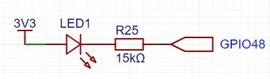

<!DOCTYPE lake>
<p data-lake-id="u862d2f7a" id="u862d2f7a" style="text-align: left"><span data-lake-id="ua75e755e" id="ua75e755e">通过阅读下面的电路图，我们知道要想让LED1亮起来，我们需要给GPIO48低电平，让灯的两端形成电压差，电流才能从LED灯的左侧流向右侧。那么在ESP32中如何让灯亮起来呢？</span></p><p data-lake-id="uedfc5402" id="uedfc5402" style="text-align: left"><span data-lake-id="u2073b951" id="u2073b951">​</span><br/></p><p data-lake-id="u049294e0" id="u049294e0" style="text-align: left"><span data-lake-id="u337bc924" id="u337bc924">原理其实和我们之前所学的基本类似。在之前的开发中，我们参考芯片的标准库，在esp32开发中，IDF其实就相当是标准库，我们需要什么功能，参考IDF的示例代码就可以了</span></p><p data-lake-id="u12fe55b9" id="u12fe55b9" style="text-align: center"></p><p data-lake-id="u0ee06592" id="u0ee06592"><span data-lake-id="uf72778f9" id="uf72778f9">参考文档：</span><a class="yuque-card-link" href="https://docs.espressif.com/projects/esp-idf/zh_CN/v5.3.2/esp32s3/api-reference/peripherals/gpio.html#id2" rel="noopener noreferrer" target="_blank">bookmarkInline：bookmarkInline</a></p><h2 data-lake-id="ZQBwL" id="ZQBwL"><span data-lake-id="ub935e17e" id="ub935e17e">示例程序</span></h2><p data-lake-id="u3df48fbc" id="u3df48fbc"><span data-lake-id="ua132a19b" id="ua132a19b">需要在CMakeLists.txt里添加</span><code data-lake-id="u462ef58f" id="u462ef58f"><span data-lake-id="u0b6e1c10" id="u0b6e1c10">REQUIRES "driver"</span></code><span data-lake-id="ua0a15ba6" id="ua0a15ba6">依赖</span></p><span class="yuque-card-unsupported">[codeblock]</span><p data-lake-id="ubc0175ed" id="ubc0175ed"><br/></p><p data-lake-id="u5d96a7a7" id="u5d96a7a7"><span data-lake-id="u9d99b479" id="u9d99b479">参考代码：Espressif\frameworks\esp-idf-v5.3.1\examples\peripherals\gpio\generic_gpio\main</span></p><span class="yuque-card-unsupported">[codeblock]</span>